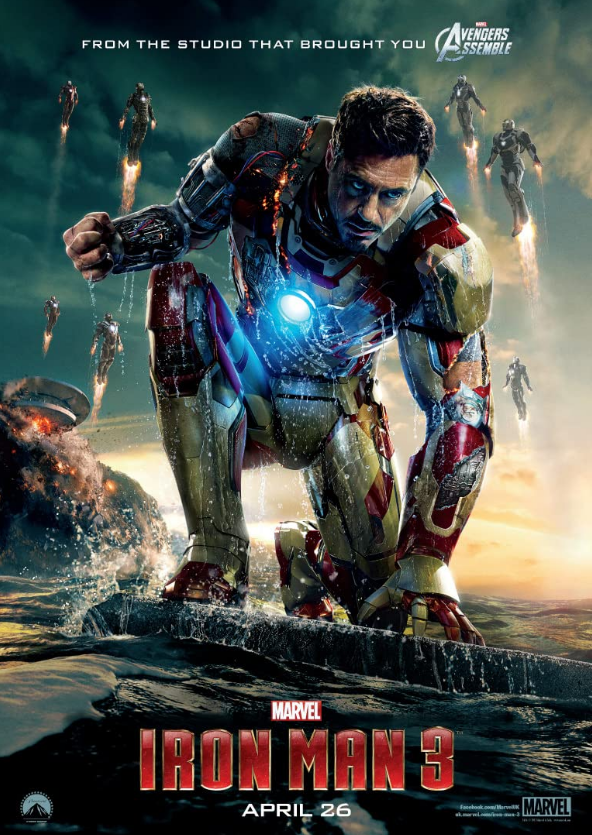
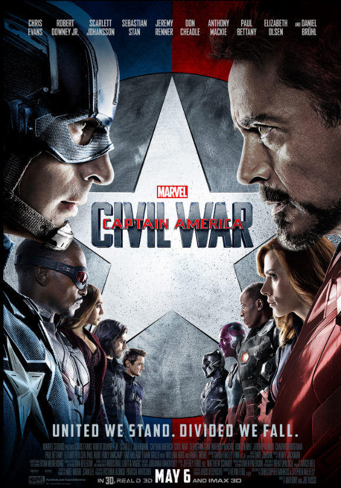

popular marvel movies

iron men 2
ახლა, როდესაც მისი სუპერ ძალის საიდუმლო უკვე ყველასთვის ცნობილია, ტონი სტარკის ცხოვრება ისეთი დაძაბულია როგორც არასდროს. ყველას აინტერესებს რკინის კაცის ტექნოლოგია, ძალაუფლებისა და სარგებელის მოსაპოვებლად. მაგრამ ივან ვანკოსთვის ეს შურისძიებაა! ტონიმ კიდევ ერხელ უნდა ჩაიცვას სუპერ გმირის კოსტიუმი და დაუპირისპირდეს სახიფათო მტერს, ოღონდ ამჯერად უკვე რამოდენიმე მოკავშირესთან ერთად.
click here to watch full movie

iron men 3
როდესაც სტარკის/რკინის კაცის სამყარო მის თვალწინ ინგრევა უცნობი ბოროტმოქმედის წყალობით, ერთადერთი მისი სურვილია მოძებნოს და გაანადგუროს მტერი.
click here to watch full movie
THE INCREDIBLE HULK
მეცნიერი ბრიუს ბანერის შესახებ არავინ არაფერი იცის, ის მისი უკონტროლო მძვინვარე ძალის "ჰალკისთვის"ვაქცინას ეძებს. როდესაც სამხედრო პირები ცდილობენ გამოიყენონ მისი ძალა და დააბრუნონ ცივილიზაციაში, ბრიუს ბანერი მის ყველაზე ძლიერ მტერს გადააწყდება - საშინელ აგრესიულ ცხოველს, რომელიც თვით ჰალკის ძალებს ედრება.
click here to watch full movie
CAPTAIN AMERICA: THE FIRST AVENGER
მეორე მსოფლიო ომის მოსაგებად ამერიკელები ბრუკლინელ, ფიზიკურად სუსტ სტივ როჯერსს სუპერ-ჯარისკაც "კაპიტან ამერიკად" გადააქცევენ. როჯერმა ადოლფ ჰიტლერის იარაღების მმართველი, სასტიკი "წითელი ჩონჩხი" უნდა შეაჩეროს. იგი ორგანიზაციის ლიდერია, რომელიც უდიდეს საიდუმლო ძალას ფლობს, რისი მეშვეობითაც მსოფლიოს დაპყრობაა შესაძლებელი.
click here to watch full movie
THOR
მამამისის ნების საწინააღმდეგოდ,ძლევამოსილი მებრძოლი - თორი, უძველეს ომს ხელახლა გააჩაღებს. სასჯელის სახით მას დედამიწაზე გააგზავნიან, სადაც ადამიანებთან ერთად უნდა იცხოვროს.აქ ის ხვდება,რას ნიშნავს იყო ნამდვილი გმირი,როდესაც მსოფლიოს ყველაზე საშიში ბოროტმოქმედი, დედამიწის გასანადგურებლად აზგარდის ბნელ ძალებს გამოაგზავნის.
click here to watch full movie
THE AVENGERS
როდესაც დედამიწას მოულოდნელი საფრთხე დაემუქრება, გლობალური უსაფრთხოების და დაცვის სამსახურის, S.H.I.E.L.D, დირექტორი ნიკ ფური გადაწყვეტს სუპერგმირების გუნდი შეკრიბოს, რათა თავიდან აიცილოს მსოფლიო მასშტაბის კატასტროფა.
click here to watch full movie
THOR: THE DARK WORLD
თორმა შეძლო აღედგინა დამცავი ბარიერი, მაგრამ ძველი რასა, ბოროტი ელფების, რომლებსაც მალეკიტი ხელმძღვანელობს ცდილობს მთელი სამყარო ხელში ჩაიგდოს.
click here to watch full movie
CAPTAIN AMERICA: THE WINTER SOLDIER
ნიუ-ორკის ამბების შემდეგ სტივ როჯერსი ცდილობს შეეჩვიოს ახალ სამყაროს და წყნარად ცხოვრობს ვაშინგტონში. მაგრამ როცა კორპორაცია S.H.I.L.D-ზე განახორციელდება თავდასხმა, როჯერსი გაიხლართება ინტრიგების ქსელში, რომელიც მთელ სამყაროს განადგურებით ემუქრება. როცა ამბები ოდნავ დაწყნარდება, კაპიტანი ამერიკა, შავი ქვრივი და ქორი შეებრძოლებიან მორიგ მოულოდნელ მტერს - ზამთრის ჯარისკაცს.
click here to watch full movie
GUARDIANS OF THE GALAXY
ამერიკელი პილოტი ჩაითრიეს გალაქტიკათშორისო კონფლიქტში. იგი გაიქცა ფუტურისტ პატიმართა ჯგუფთან ერთად, რომლებსაც ისეთი რაღაც აქვთ, რაზეც ყველა ნადირობს...
click here to watch full movie
AVENGERS: AGE OF ULTRON
სიკველის სიუჟეტის მოვლენები დატრიალდება ახალი საერთო პრობლემის გარშემო - ალტრონის სახით - ხელოვნური ინტელექტი, რომელიც იყო შექმნილი დედამიწის მოსახლეობის დასაცავად. მიუხედავად თავისი დანიშნულებისა, კაცობრიობის ყველაზე მთავარი საფრთხე ის აღმოჩნდება. თუ “შურისმაძიებლების” გუნდი ვერ მოახერხებს მის შეჩერებას, მაშინ დედამიწაზე დადგება ახალი ერა, სადაც არ იქნება არცერთი ადამიანი
click here to watch full movie
Ant-Man
Ant-Man is a 2015 American superhero film based on the Marvel Comics characters of the same name: Scott Lang and Hank Pym. Produced by Marvel Studios and distributed by Walt Disney Studios Motion Pictures, it is the 12th film in the Marvel Cinematic Universe (MCU).
click here to watch trailer

DOCTOR STRANGE
მას შემდეგ რაც მისი კარიერა განადგურდა, ბრწყინვალე მაგრამ ქედმაღალი ექიმი ახალ გამოწვევას იღებს ცხოვრებაში, როდესაც ჯადოქარი მას მფარველობაში აიყვანს და წვრთნის, რათა სამყარო დაიცვას ბოროტებისაგან.
click here to watch full movie
